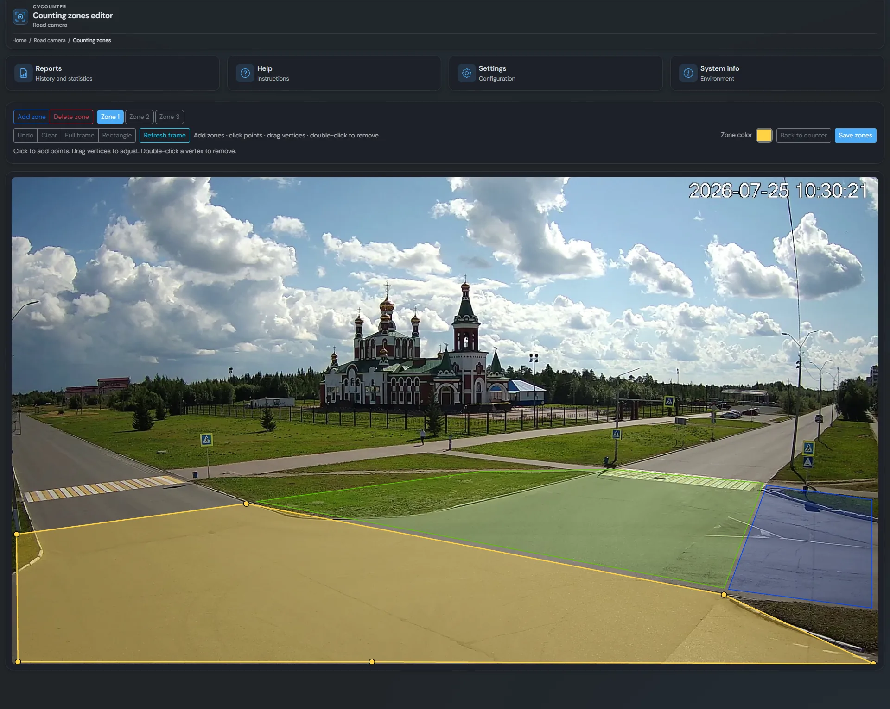
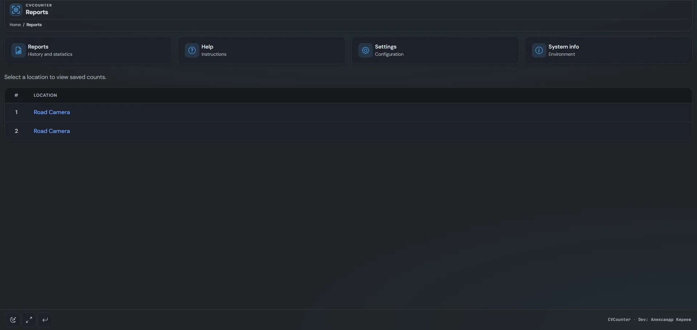

detect
Real-time detection
RTSP, webcam, or file. Automatic inference backend selection.
Object counting from cameras: detection, tracking, and zones — on the line, in the warehouse, or at the entrance. Clients only need a browser.
Camera counting without a heavy desktop client — line, warehouse, entrance, browser only.
RTSP, webcam, or file. Automatic inference backend selection.
Robust object IDs across frames, significantly fewer double counts.
Polygons and rectangles: vertex numbering, canvas pan/zoom, undo/redo.
Frame auto-capture, bounding box and polygon labeling, YOLO training in UI.
CUDA, DirectML, OpenVINO, TensorRT. Export models to ONNX & .engine.
Detection-triggered video recording, printable A4 reports with signatures.
Configure detection and counting zones for object accounting from any RTSP cameras and video streams.
Track visitors entering and exiting through doorways, gates, and corridors.
Count traffic across roadway lanes, facility gate barriers, and entryways.
Measure passerby vs entered footfall, evaluate shifts against cashier receipts.
Count items on conveyor lines, track parcel boxes and pallets passing loading gates.
Capture from RTSP camera, webcam, or video file.
YOLO, ONNX Runtime, OpenVINO, TensorRT, or OpenCV.
Persistent ID tracking across frame boundaries.
Entering polygonal zones increments counters by class.
Batch reports, media recordings, and printable A4 sheets.
What you get as an operational product, not just a model in a notebook.
| Capability | YOLO script | CVCounter |
|---|---|---|
| Web UI & kiosk | Build from scratch | Built-in ready to use |
| Counting zones (polygons) | Manual coordinate code | Interactive UI editor |
| Object tracking | Basic / missing | ByteTrack |
| Dataset labeling & training | Third-party tools | Full in-app pipeline |
| Multiple cameras | Custom scripts | Multi-view & camera grid |
| Reports, photo & video | Raw files on disk | Embedded DB + A4 printing |
| Backends & acceleration | Single framework | ONNX, OpenVINO, TensorRT, YOLO |
| 1-Click install & GPU detect | Manual venv/driver setup | 1-click script (install.bat / .sh) |
Flask panel: counters, zones, reports.





Yes — conveyor, warehouse, shop floor. See the industrial counting page.
RTSP, webcam, and video files.
Recommended for high FPS (NVIDIA CUDA, AMD DirectML, Intel Arc / OpenVINO). CPU is also supported. The installer automatically detects your hardware.
Yes, AGPL-3.0. Source on GitHub.
Version 5.9.0. Source, 1-click install scripts, and Docker on GitHub.